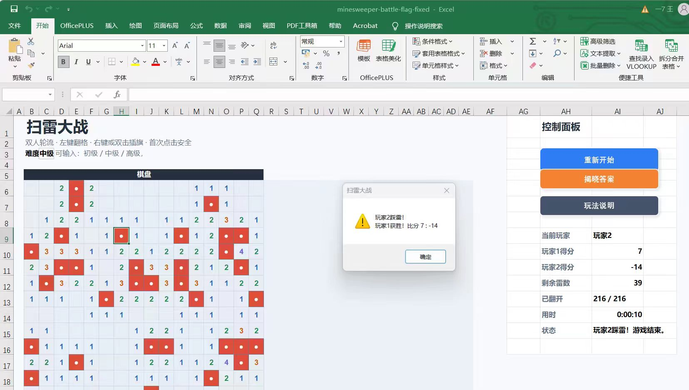
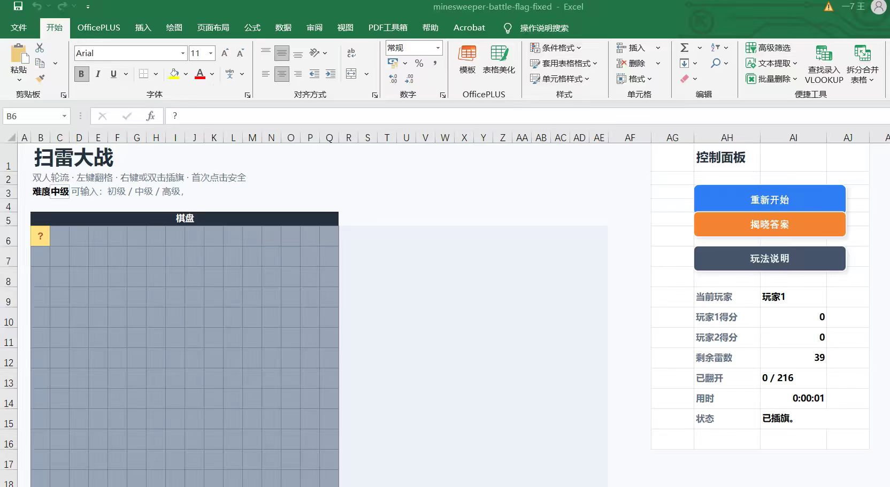

案例 01 / Excel 游戏
扫雷大战 · Excel 双人对战
用 Excel 单元格充当棋盘，把传统扫雷改造成双人轮流对战的小型规则游戏，验证“无代码也能做完整玩法循环”。
- 16×16 棋盘 + 39 颗雷的中级局，双人轮流左键翻格 / 右键或双击插旗
- 控制面板：重新开始、揭晓答案、玩法说明、当前玩家轮转
- 实时统计玩家1 / 玩家2 得分、剩余雷数、已翻开格数与用时
- 状态机自动判定踩雷、回合切换与游戏结束并弹窗提示

